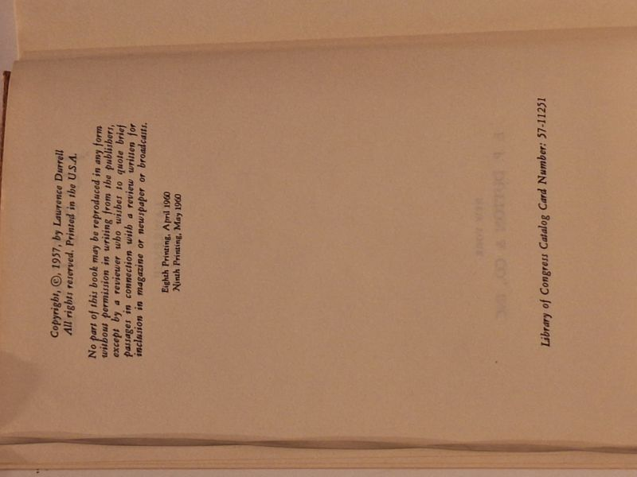

Justine
Lawrence Durrell · E. P. Dutton & Co., New York, 1957

C$None · Good condition
E. P. Dutton & Co., New York. Copyright (c) 1957 by Lawrence Durrell. This copy: Eighth Printing April 1960 / Ninth Printing May 1960 (NOT a first printing). LCCN 57-11251. The opening novel of the Alexandria Quartet - Durrell's modernist masterwork set in pre-war Alexandria, told through the obsessive memory of an Irish schoolmaster and the woman Justine. Hardcover with original pictorial dust jacket (orange/red field, mosque-and-figures illustration, Cyril Connolly and Gore Vidal blurbs on front panel). Reading copy of the US edition that introduced Durrell to American readers and made the Quartet an international event. Companion Quartet volumes from the same collection available (Balthazar, Mountolive 1st, Clea Faber 1st).
Details
- Publisher: E. P. Dutton & Co., New York, 1957
- Binding: Hardcover
- Edition: Eighth Printing, April 1960 / Ninth Printing, May 1960 (later printing of the 1957 US first)
- Condition: Good
- Dust jacket: Good
- Category: Literary Fiction